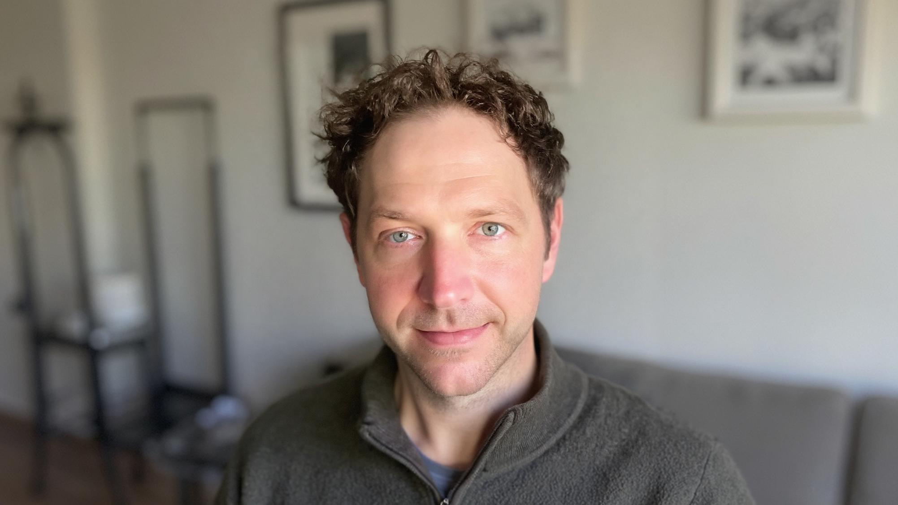

Who I am
Certified Zendesk Support Administrator with specialization in UI | UX | CX, I am actively seeking the next opportunity to advance my career. I have extensive experience managing and customizing all aspects of an enterprise-level Zendesk instance, including configuration, maintenance, and optimization. The skills and insights I’ve gained are highly transferable, and I’m confident they will add immediate value to any organization that welcomes me aboard. I’m not only eager to contribute, I’m genuinely excited to demonstrate the impact I can make.

What I’m Bringing
Zendesk Administrator (3 years)
- Worked with and directed teams of all levels to create workflows that significantly raised the CX bar
- Well versed in Talk, Messaging, Chat, Integrated apps, Automations, Zendesk API’s
- Deep understanding of Zendesk Support, Guide, Explore, Email, Triggers, Macros
- SME - Support Forms, Web Forms, Ticket Routing
UI | UX | CX
As a front-end developer, I’ve spent years refining my skills through the creation of websites, applications, and interactive programs. I possess a strong understanding of the Software Development Life Cycle (SDLC), and apply version control best practices to ensure stability, consistency, and collaboration across projects.
One of my core passions lies in designing and evolving user interfaces that feel intuitive and immersive. I strive to create experiences where users can seamlessly engage with a product, regardless of platform, without needing to think about how to use it. My approach centers on thoughtful design and empathetic problem solving, with the goal of making technology feel invisible and the experience unique.
What I’m looking for
I’m seeking an environment where I can ground experience gained, and continue building on that foundation. Ideally, I hope to join a team that values curiosity, embraces challenge, and encourages mutual growth. In my experience, the most innovative ideas emerge when people push boundaries together, challenge assumptions, and collaborate with purpose. That’s the kind of space where I thrive, and where I aim to make a meaningful contribution.